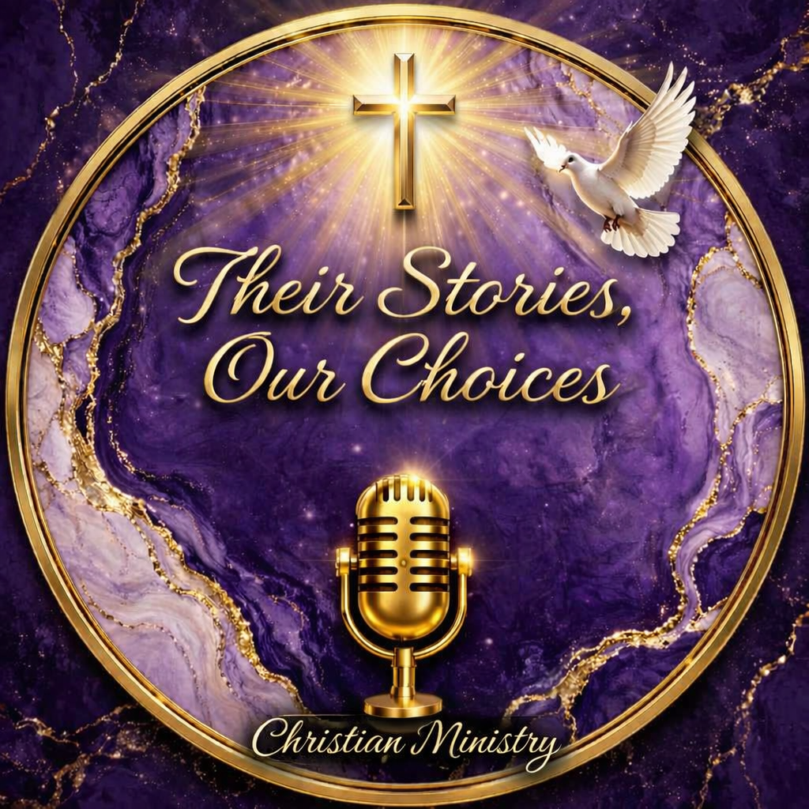

Your Faith Journey
How your relationship with God has grown or changed through life.

Their Stories, Our Choices CHRISTIAN PODCAST MINISTRYYOUR STORY MATTERS
Your experiences, lessons, and testimony may offer hope, encouragement, and a reminder of God's grace to someone walking a similar path.
Learn How to ShareA SAFE, RESPECTFUL INVITATION
We welcome stories about faith, life choices, lessons learned, overcoming challenges, personal growth, and moments when God's presence brought hope or understanding.
You are never obligated to share your story. You may choose what to share, and you should avoid including private information about yourself or other people without permission.
BEGIN YOUR TESTIMONY JOURNEY
How your relationship with God has grown or changed through life.
What your choices and experiences have taught you along the way.
Encouragement, healing, perseverance, and the grace you've experienced.
“And they overcame him by the blood of the Lamb, and by the word of their testimony.”
Revelation 12:11 · KJV